An overview of the process I took to create Dayrise.
I started off with research into popular alarm clock apps, wanting to find where the was an opportunity for a new type of alarm clock. I found that while current alarm clocks are good at getting people up physically, they often do so through unpleasant experiences.
There were few apps that focused on people waking up feeling a certain emotional state. Therefore, I decided to focus my project on an alarm clock that targets people's emotional states in the morning.
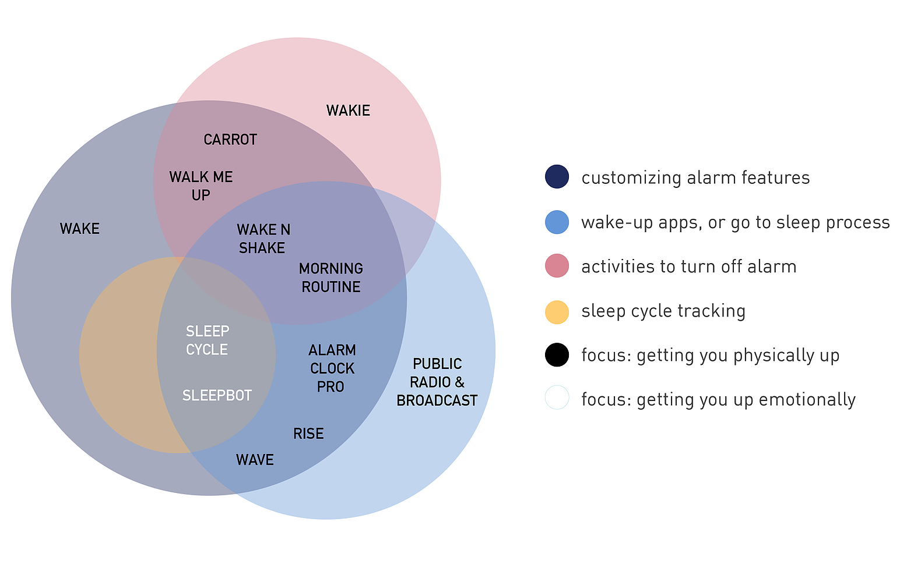Category research on popular mobile alarm clocks. I found that while alarm clocks are great at getting users up, they neglect the emotional experience of waking up and preparing for the day.
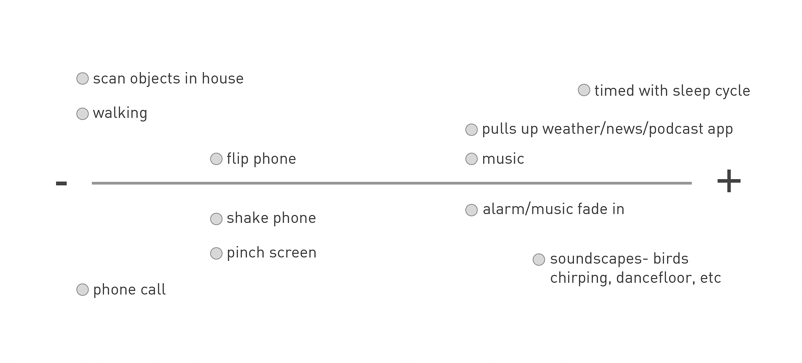As I wanted to ensure that users felt positive in the morning, I mapped how alarm features could have a positive or negative implication.
In semi-structured interviews, I sought to understand college students' typical mornings, sleeping habits, and current alarm clock usage. When asked to describe their emotional state in the mornings, people used words such as tired, depressing, hackneyed, unhappy, resigned, unmotivated, and grumpy. In general, it was evident that mornings aren't pleasant, especially for stressed out college students. Students would oftentimes wake up to busy days that they didn't look forward to. However, if they were looking forward to something in their day, they generally had a more positive outlook upon waking.

I also conducted informal observational studies of how people used their mobile alarm clocks, by having people walk me through their alarm clock usage. I found that users valued simplicity and ease of use in their mobile alarm clock apps as they would be tired at the end of a long day.
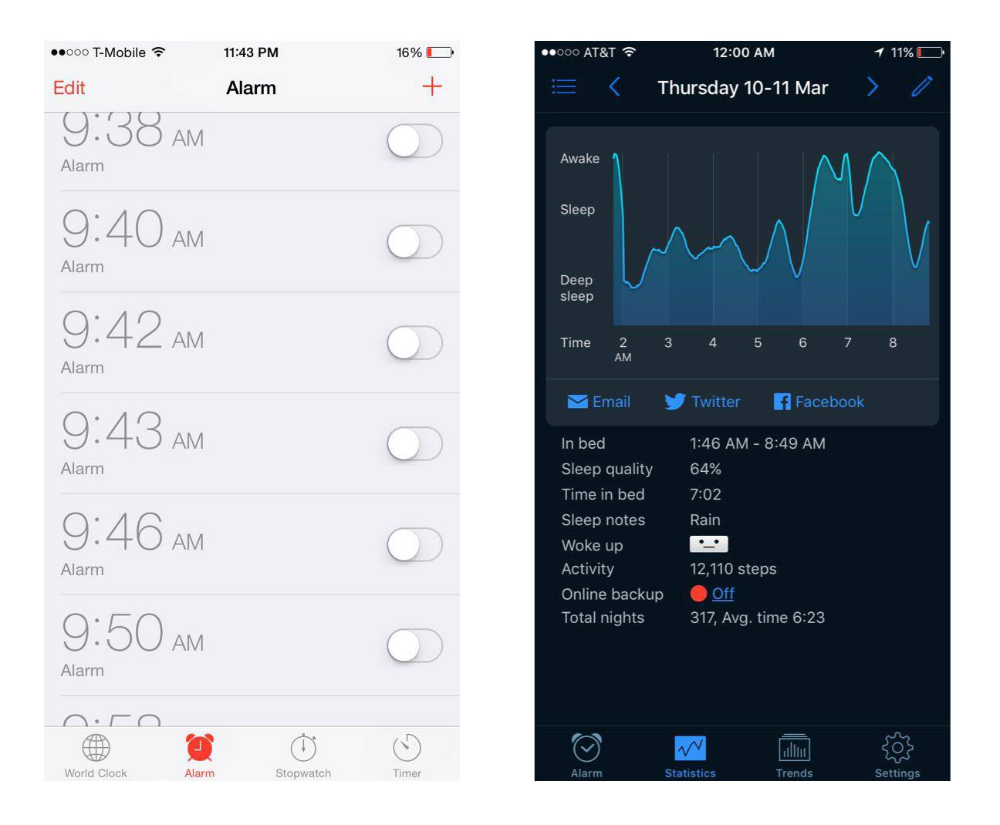Screenshots of people's mobile alarm clocks. The person on the left set a new alarm every night because he didn't want to go through the effort of editing his old alarms. Another person liked to use SleepCycle, which prompts users to input their mood upon waking up. While she found the data interesting, she was interested in something actionable to improve her mood in the mornings.
I began with initial concept sketches to consider how to get people up in more pleasant ways. I then considered user scenarios to help me visualize how the alarm clock will fit into users' daily habits. These user scenarios crystallized into three design directions I felt would best address user needs in the context of their mornings.
1. Mood Based Alarm Customization
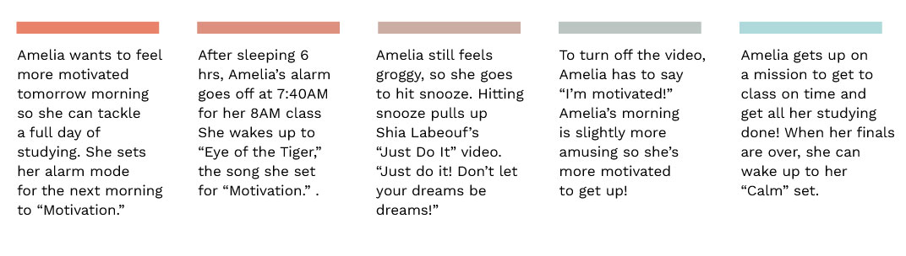2. Mood Tracking
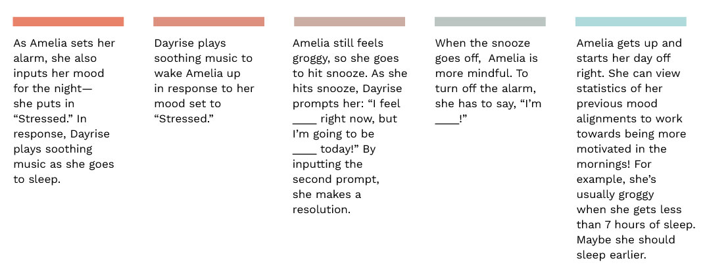3. Mood Alignment
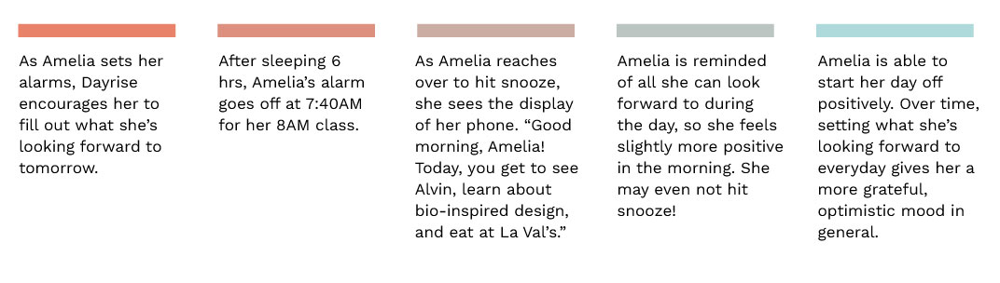I ultimate chose to focus on Mood Alignment due to the fact that it best addressed user needs that I uncovered through my research.
- Helps people foster a more positive outlook right as they wake up so they aren't as tempted to snooze and go back to sleep
- Encourages people to be reflective each night and over time, fostering a more healthy emotional life. As Dayrise encourages reflection, it provides a framework for users to incite their own positivity (vs an outside force imposing a certain emotional state)
- Simple and lightweight so that it requires minimal energy from people after a long day
To flesh out my concept, I sketched some rough wireframes before building out a few screens in higher fidelity. While building these wireframes, I aimed to make something that will fulfill the following parameters, based on my user research.
- Visually evokes positive and soothing emotions
- Making entries feels seamless and smooth, to minimize any late night fatigue that may prevent someone from filling out the prompt
- Previous entries are easily accessible, to encourage a sense of reflection
Initial sketches
Dayrise makes mornings happier, promoting a mindful lifestyle. By filling out a short prompt each night, people are encouraged to be more conscious as they go to sleep. In the morning, people are greeted with their own commitment to facing their day with a positive outlook.
While these aren't complete screens, and some aspects have yet to be fleshed out, this is a first look at a possible concept for Dayrise.
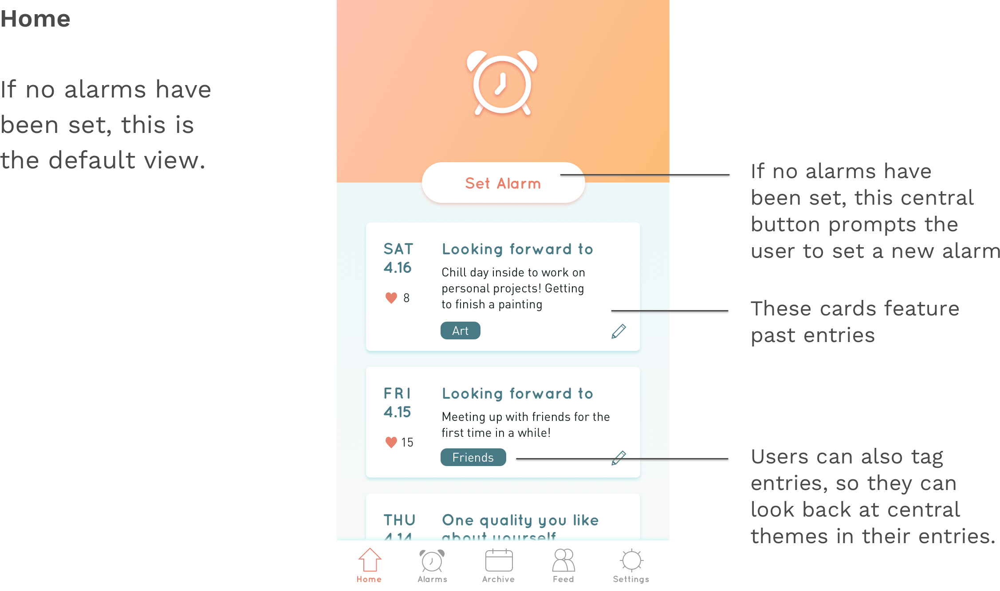 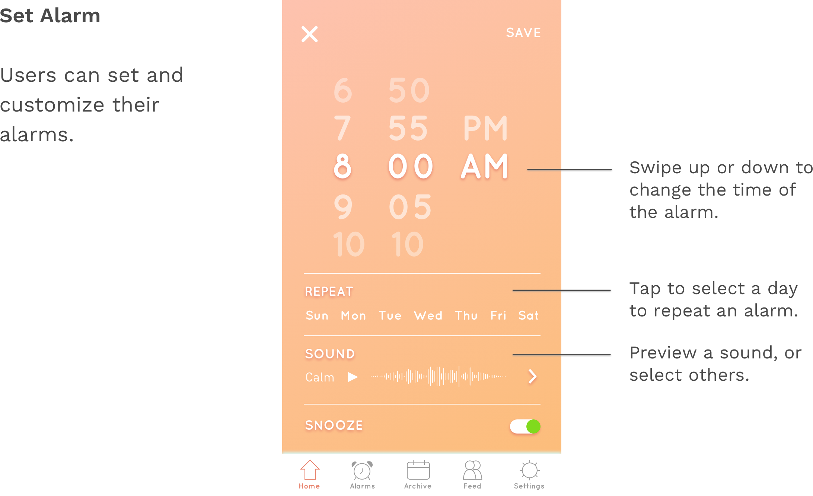 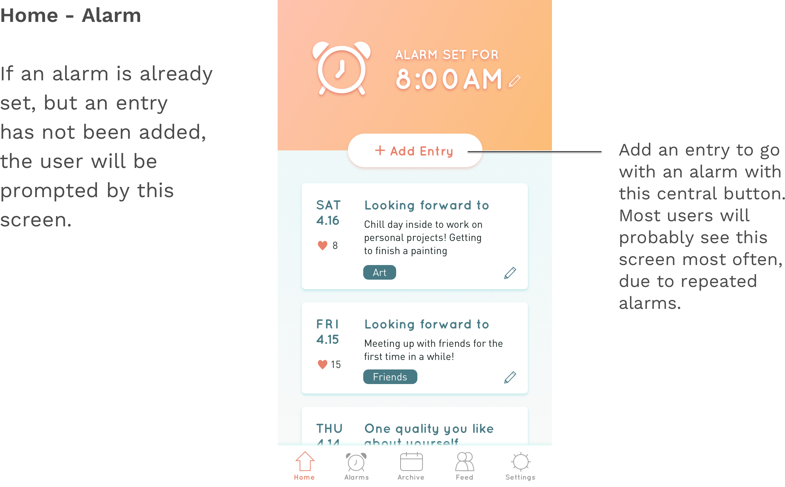 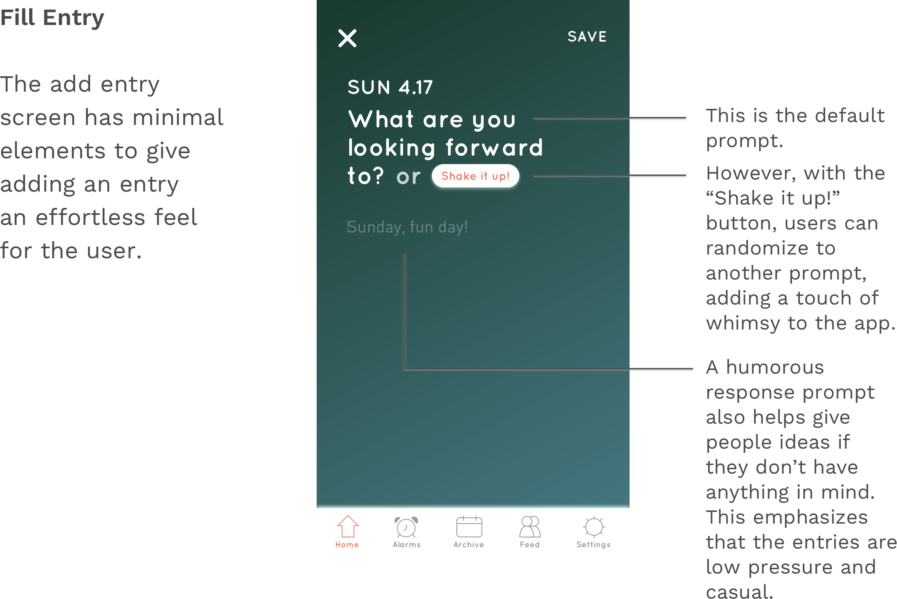 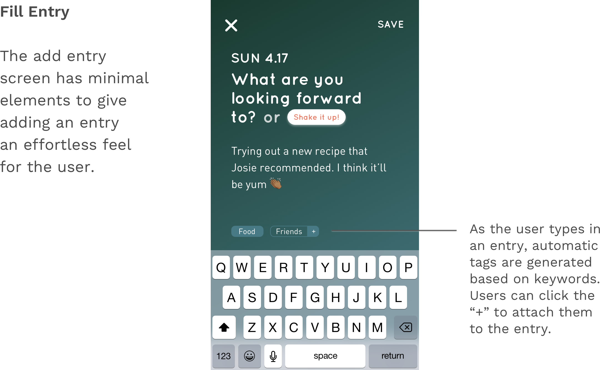 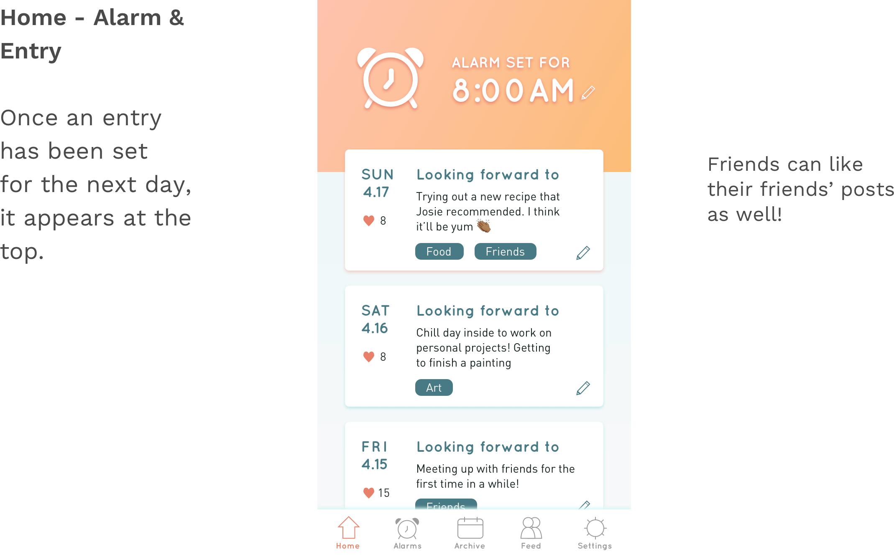 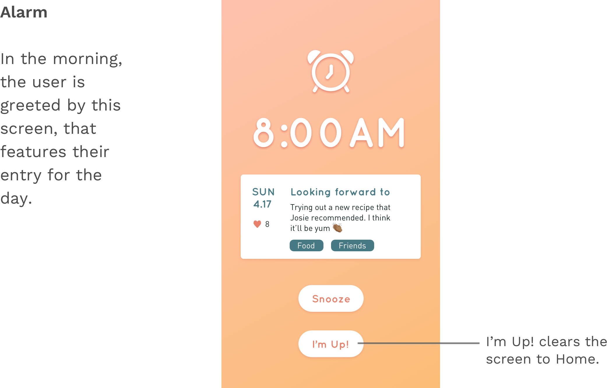In the future, I would like to flesh out the rest of the screens for Dayrise. These screens include:
- ArchiveA page where users can get a holistic view of their previous entries, rather than just their most recent ones
- Social FeedHere, users can see what their friends are posting on Dayrise, adding a social component onto the alarm
Furthermore, it would be useful to gather user feedback on the value that this app brings. One particular concern I had was whether that the effort needed to input entries requires a certain mindset that busy people may be disinterested in. Does simply seeing a message on your screen in the morning promote a healthier mindset in the morning? Several studies point out that taking a pause for quiet, reflective time in the morning is positive. However, is the current message display enough of a prompter for users?